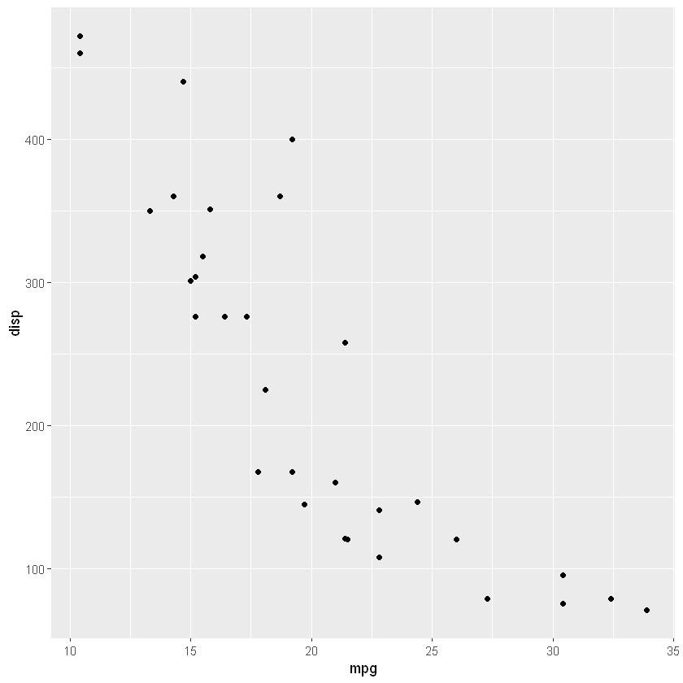

data(mtcars)R ile Açıklayıcı Veri Analizi (EDA),Veri Manipülasyonu (dplyr) ve Veri Görselleştirme (ggplot2)
- Bu hafta R ile
Açıklayıcı Veri Analizi (EDA),veri manipülasyonu (dplyr)veveri görselleştirme (ggplot2)konularını göreceksiniz.
Açıklayıcı Veri Analizi (EDA)
- Veri setlerini R ile özetleme tekniklerinin bir derlemesi.
- Veri setlerini görselleştirerek ve dönüştürerek cevapları bulmak.
- Öğrendiklerinizi kullanarak, sorularınızı geliştirmek ve/veya yeni sorular oluşturmak için kullanılır.
- EDA yapmak için çoğunlukla
summary,headvetablefonksiyonlarını ve veri görselleştirme yöntemlerini kullanacağız.
mtcars veri seti
İlk veri seti
mtcarsveri seti olacaktır.Veriler 1974 Motor Trend ABD dergisinden alınmıştır ve 32 otomobil modeli (1973-74 modelleri) için yakıt tüketimini ve özelliklerini içermektedir.
Veriler 11 (sayısal) değişkene ait 32 gözlemi içeren bir dataframeden ıluşmaktadır.
mpgMil/(US) galoncylSilindir sayısıdispMotor hacmi (cu.in.)hpBeygir gücüdratArka aks oranıwtAğırlık (1000 lbs)qsec1/4 mil süresivsMotor tipi (0 = V-şekilli, 1 = düz)amŞanzıman tipi (0 = otomatik, 1 = manuel)gearVites sayısıcarbKarbüratör sayısı
mtcars, R kurulumu ile birlikte gelen bir veri setidir, bu yüzden onu okutmanıza gerek yoktur.
head(mtcars) # verini ilk 5-6 satırını verir| mpg | cyl | disp | hp | drat | wt | qsec | vs | am | gear | carb | |
|---|---|---|---|---|---|---|---|---|---|---|---|
| Mazda RX4 | 21.0 | 6 | 160 | 110 | 3.90 | 2.620 | 16.46 | 0 | 1 | 4 | 4 |
| Mazda RX4 Wag | 21.0 | 6 | 160 | 110 | 3.90 | 2.875 | 17.02 | 0 | 1 | 4 | 4 |
| Datsun 710 | 22.8 | 4 | 108 | 93 | 3.85 | 2.320 | 18.61 | 1 | 1 | 4 | 1 |
| Hornet 4 Drive | 21.4 | 6 | 258 | 110 | 3.08 | 3.215 | 19.44 | 1 | 0 | 3 | 1 |
| Hornet Sportabout | 18.7 | 8 | 360 | 175 | 3.15 | 3.440 | 17.02 | 0 | 0 | 3 | 2 |
| Valiant | 18.1 | 6 | 225 | 105 | 2.76 | 3.460 | 20.22 | 1 | 0 | 3 | 1 |
summary(mtcars) mpg cyl disp hp
Min. :10.40 Min. :4.000 Min. : 71.1 Min. : 52.0
1st Qu.:15.43 1st Qu.:4.000 1st Qu.:120.8 1st Qu.: 96.5
Median :19.20 Median :6.000 Median :196.3 Median :123.0
Mean :20.09 Mean :6.188 Mean :230.7 Mean :146.7
3rd Qu.:22.80 3rd Qu.:8.000 3rd Qu.:326.0 3rd Qu.:180.0
Max. :33.90 Max. :8.000 Max. :472.0 Max. :335.0
drat wt qsec vs
Min. :2.760 Min. :1.513 Min. :14.50 Min. :0.0000
1st Qu.:3.080 1st Qu.:2.581 1st Qu.:16.89 1st Qu.:0.0000
Median :3.695 Median :3.325 Median :17.71 Median :0.0000
Mean :3.597 Mean :3.217 Mean :17.85 Mean :0.4375
3rd Qu.:3.920 3rd Qu.:3.610 3rd Qu.:18.90 3rd Qu.:1.0000
Max. :4.930 Max. :5.424 Max. :22.90 Max. :1.0000
am gear carb
Min. :0.0000 Min. :3.000 Min. :1.000
1st Qu.:0.0000 1st Qu.:3.000 1st Qu.:2.000
Median :0.0000 Median :4.000 Median :2.000
Mean :0.4062 Mean :3.688 Mean :2.812
3rd Qu.:1.0000 3rd Qu.:4.000 3rd Qu.:4.000
Max. :1.0000 Max. :5.000 Max. :8.000 applyfonksiyonunu tüm sütunlarda bir işlevi tekrarlamak için kullanabilirsiniz. Aşağıdaki kod tüm sütunlar için bir frekans tablosu verir.- Burada
applyfonksiyonu üç argümana sahiptir.- Birincisi
mtcarsveri setidir. - İkincisi fonksiyonun hangi boyut üzerinde uygulanacağını belirtir.
1satırı ,2sütunları belirtmektedir. - Üçüncüsü ise
tablefonksiyonudur.
- Birincisi
apply(mtcars,2,table)ifadesimtcarsveri setindeki tüm sütunlar üzerindetablefonksiyonunun uygulanacağı anlamına gelir. Burdaki2sütunları ifade eder. Yani her bir sütun içintablefonksiyonu çalıştırılacaktır.- Veri setinde önce bazı değişkenlerin kategorik hale getirilmesi gerekir.
apply(mtcars,2,table)$mpg
10.4 13.3 14.3 14.7 15 15.2 15.5 15.8 16.4 17.3 17.8 18.1 18.7 19.2 19.7 21
2 1 1 1 1 2 1 1 1 1 1 1 1 2 1 2
21.4 21.5 22.8 24.4 26 27.3 30.4 32.4 33.9
2 1 2 1 1 1 2 1 1
$cyl
4 6 8
11 7 14
$disp
71.1 75.7 78.7 79 95.1 108 120.1 120.3 121 140.8 145 146.7 160
1 1 1 1 1 1 1 1 1 1 1 1 2
167.6 225 258 275.8 301 304 318 350 351 360 400 440 460
2 1 1 3 1 1 1 1 1 2 1 1 1
472
1
$hp
52 62 65 66 91 93 95 97 105 109 110 113 123 150 175 180 205 215 230 245
1 1 1 2 1 1 1 1 1 1 3 1 2 2 3 3 1 1 1 2
264 335
1 1
$drat
2.76 2.93 3 3.07 3.08 3.15 3.21 3.23 3.54 3.62 3.69 3.7 3.73 3.77 3.85 3.9
2 1 1 3 2 2 1 1 1 1 1 1 1 1 1 2
3.92 4.08 4.11 4.22 4.43 4.93
3 2 1 2 1 1
$wt
1.513 1.615 1.835 1.935 2.14 2.2 2.32 2.465 2.62 2.77 2.78 2.875 3.15
1 1 1 1 1 1 1 1 1 1 1 1 1
3.17 3.19 3.215 3.435 3.44 3.46 3.52 3.57 3.73 3.78 3.84 3.845 4.07
1 1 1 1 3 1 1 2 1 1 1 1 1
5.25 5.345 5.424
1 1 1
$qsec
14.5 14.6 15.41 15.5 15.84 16.46 16.7 16.87 16.9 17.02 17.05 17.3 17.4
1 1 1 1 1 1 1 1 1 2 1 1 1
17.42 17.6 17.82 17.98 18 18.3 18.52 18.6 18.61 18.9 19.44 19.47 19.9
1 1 1 1 1 1 1 1 1 2 1 1 1
20 20.01 20.22 22.9
1 1 1 1
$vs
0 1
18 14
$am
0 1
19 13
$gear
3 4 5
15 12 5
$carb
1 2 3 4 6 8
7 10 3 10 1 1 - Aşağıdaki kod, uygun değişkenlerden bazılarını ketegorik değişkenlere dönüştürmektedir.
mtcars$cyl <- as.factor(mtcars$cyl) # Silindir sayısı
mtcars$vs <- factor(mtcars$vs, labels = c("V-shaped", "straight")) #Motor tipi (0 = V-şekilli, 1 = düz)
mtcars$am <- factor(mtcars$am, labels = c("automatic", "manual")) #Şanzıman tipi (0 = otomatik, 1 = manuel)
mtcars$carb <- as.factor(mtcars$carb) #Karbüratör sayısı
mtcars$gear <- as.factor(mtcars$gear) #Vites sayısısummary(mtcars) mpg cyl disp hp drat
Min. :10.40 4:11 Min. : 71.1 Min. : 52.0 Min. :2.760
1st Qu.:15.43 6: 7 1st Qu.:120.8 1st Qu.: 96.5 1st Qu.:3.080
Median :19.20 8:14 Median :196.3 Median :123.0 Median :3.695
Mean :20.09 Mean :230.7 Mean :146.7 Mean :3.597
3rd Qu.:22.80 3rd Qu.:326.0 3rd Qu.:180.0 3rd Qu.:3.920
Max. :33.90 Max. :472.0 Max. :335.0 Max. :4.930
wt qsec vs am gear carb
Min. :1.513 Min. :14.50 V-shaped:18 automatic:19 3:15 1: 7
1st Qu.:2.581 1st Qu.:16.89 straight:14 manual :13 4:12 2:10
Median :3.325 Median :17.71 5: 5 3: 3
Mean :3.217 Mean :17.85 4:10
3rd Qu.:3.610 3rd Qu.:18.90 6: 1
Max. :5.424 Max. :22.90 8: 1 “dplyr” ile Veri Manipülasyonu
Pipe operatörü (%>%)
- Pipe operatörü, karmaşık ve iç içe yapıları kodlarken daha basit ve okunabilir bir yaklaşım sunmak için
magrittr()paketinde yer almaktaydı. - Daha sonra pipe operatörü
dplyr()paketinde kullanılmıştır. - Aşağıdaki sonucu elde etmenin farklı yollarını düşünelim.
- Bu amaçla
mtcars()veri seti ile devam edeceğiz.- Karbüratör sayısı 1’den büyük olan
- Silindir sayısına göre
- Araçları ortalama yakıt tüketimine göre
- azanlan bir biçimde sıralamak isteyelim.
- Bu işlemi birkaç farklı yaklaşımla çözebiliriz.
İç İçe Geçmiş Yaklaşım
# install.packages('dplyr') # if you didn't do that earlier
library(dplyr)arrange(
summarize(
group_by(
filter(mtcars, as.numeric(carb) > 1),
cyl
),
Avg_mpg = mean(mpg)
),
desc(Avg_mpg)
)| cyl | Avg_mpg |
|---|---|
| 4 | 25.90 |
| 6 | 19.74 |
| 8 | 15.10 |
*Bu yaklaşım biraz karmaşıktır.
Çoklu Obje Yaklaşımı
a <- filter(mtcars, as.numeric(carb) > 1)
b <- group_by(a, cyl)
c <- summarise(b, Avg_mpg = mean(mpg))
d <- arrange(c, desc(Avg_mpg))
print(d)# A tibble: 3 x 2
cyl Avg_mpg
<fct> <dbl>
1 4 25.9
2 6 19.7
3 8 15.1- Bu yaklaşım kolay olsa da gereksiz ara objelerin oluşturulmasını gerektirir.
%>% (Pipe) Yaklaşımı
mtcars %>%
filter(as.numeric(carb) > 1) %>%
group_by(cyl) %>%
summarise(Avg_mpg = mean(mpg)) %>%
arrange(desc(Avg_mpg))| cyl | Avg_mpg |
|---|---|
| 4 | 25.90 |
| 6 | 19.74 |
| 8 | 15.10 |
%>%yaklaşımı hem kolaydır hemde gereksiz objeler üretmediğinden en ideal yöntemdir.
Veri Manpülasyonu için dplyr
- Bu bölümde
dplyrpaketinde bulunan bazı yararlı fonksiyonları kullanılır. - İlk olarak paketi yükleyelim.
library(dplyr)select()
select()bir veri çerçevesindeki değişkenleri seçmek için kullanılır.mpgvedispdeğişkenlerini seçmek isteyelim.
select(mtcars, mpg, cyl)| mpg | cyl | |
|---|---|---|
| Mazda RX4 | 21.0 | 6 |
| Mazda RX4 Wag | 21.0 | 6 |
| Datsun 710 | 22.8 | 4 |
| Hornet 4 Drive | 21.4 | 6 |
| Hornet Sportabout | 18.7 | 8 |
| Valiant | 18.1 | 6 |
| Duster 360 | 14.3 | 8 |
| Merc 240D | 24.4 | 4 |
| Merc 230 | 22.8 | 4 |
| Merc 280 | 19.2 | 6 |
| Merc 280C | 17.8 | 6 |
| Merc 450SE | 16.4 | 8 |
| Merc 450SL | 17.3 | 8 |
| Merc 450SLC | 15.2 | 8 |
| Cadillac Fleetwood | 10.4 | 8 |
| Lincoln Continental | 10.4 | 8 |
| Chrysler Imperial | 14.7 | 8 |
| Fiat 128 | 32.4 | 4 |
| Honda Civic | 30.4 | 4 |
| Toyota Corolla | 33.9 | 4 |
| Toyota Corona | 21.5 | 4 |
| Dodge Challenger | 15.5 | 8 |
| AMC Javelin | 15.2 | 8 |
| Camaro Z28 | 13.3 | 8 |
| Pontiac Firebird | 19.2 | 8 |
| Fiat X1-9 | 27.3 | 4 |
| Porsche 914-2 | 26.0 | 4 |
| Lotus Europa | 30.4 | 4 |
| Ford Pantera L | 15.8 | 8 |
| Ferrari Dino | 19.7 | 6 |
| Maserati Bora | 15.0 | 8 |
| Volvo 142E | 21.4 | 4 |
- Ya da aynı çıktıyı elde etmek için pipe “%>%” operatörü kullanılabilir. Bu notasyonu aşağıdaki örneklerde kullanacağız çünkü iç içe geçmiş işlemleri kullanmamızı sağlar.
mtcars %>% select(mpg, cyl)| mpg | cyl | |
|---|---|---|
| Mazda RX4 | 21.0 | 6 |
| Mazda RX4 Wag | 21.0 | 6 |
| Datsun 710 | 22.8 | 4 |
| Hornet 4 Drive | 21.4 | 6 |
| Hornet Sportabout | 18.7 | 8 |
| Valiant | 18.1 | 6 |
| Duster 360 | 14.3 | 8 |
| Merc 240D | 24.4 | 4 |
| Merc 230 | 22.8 | 4 |
| Merc 280 | 19.2 | 6 |
| Merc 280C | 17.8 | 6 |
| Merc 450SE | 16.4 | 8 |
| Merc 450SL | 17.3 | 8 |
| Merc 450SLC | 15.2 | 8 |
| Cadillac Fleetwood | 10.4 | 8 |
| Lincoln Continental | 10.4 | 8 |
| Chrysler Imperial | 14.7 | 8 |
| Fiat 128 | 32.4 | 4 |
| Honda Civic | 30.4 | 4 |
| Toyota Corolla | 33.9 | 4 |
| Toyota Corona | 21.5 | 4 |
| Dodge Challenger | 15.5 | 8 |
| AMC Javelin | 15.2 | 8 |
| Camaro Z28 | 13.3 | 8 |
| Pontiac Firebird | 19.2 | 8 |
| Fiat X1-9 | 27.3 | 4 |
| Porsche 914-2 | 26.0 | 4 |
| Lotus Europa | 30.4 | 4 |
| Ford Pantera L | 15.8 | 8 |
| Ferrari Dino | 19.7 | 6 |
| Maserati Bora | 15.0 | 8 |
| Volvo 142E | 21.4 | 4 |
* Ardışık değişkeleri seçmek için `:` işareti kullanılabilir.mtcars %>% select(mpg:qsec)| mpg | cyl | disp | hp | drat | wt | qsec | |
|---|---|---|---|---|---|---|---|
| Mazda RX4 | 21.0 | 6 | 160.0 | 110 | 3.90 | 2.620 | 16.46 |
| Mazda RX4 Wag | 21.0 | 6 | 160.0 | 110 | 3.90 | 2.875 | 17.02 |
| Datsun 710 | 22.8 | 4 | 108.0 | 93 | 3.85 | 2.320 | 18.61 |
| Hornet 4 Drive | 21.4 | 6 | 258.0 | 110 | 3.08 | 3.215 | 19.44 |
| Hornet Sportabout | 18.7 | 8 | 360.0 | 175 | 3.15 | 3.440 | 17.02 |
| Valiant | 18.1 | 6 | 225.0 | 105 | 2.76 | 3.460 | 20.22 |
| Duster 360 | 14.3 | 8 | 360.0 | 245 | 3.21 | 3.570 | 15.84 |
| Merc 240D | 24.4 | 4 | 146.7 | 62 | 3.69 | 3.190 | 20.00 |
| Merc 230 | 22.8 | 4 | 140.8 | 95 | 3.92 | 3.150 | 22.90 |
| Merc 280 | 19.2 | 6 | 167.6 | 123 | 3.92 | 3.440 | 18.30 |
| Merc 280C | 17.8 | 6 | 167.6 | 123 | 3.92 | 3.440 | 18.90 |
| Merc 450SE | 16.4 | 8 | 275.8 | 180 | 3.07 | 4.070 | 17.40 |
| Merc 450SL | 17.3 | 8 | 275.8 | 180 | 3.07 | 3.730 | 17.60 |
| Merc 450SLC | 15.2 | 8 | 275.8 | 180 | 3.07 | 3.780 | 18.00 |
| Cadillac Fleetwood | 10.4 | 8 | 472.0 | 205 | 2.93 | 5.250 | 17.98 |
| Lincoln Continental | 10.4 | 8 | 460.0 | 215 | 3.00 | 5.424 | 17.82 |
| Chrysler Imperial | 14.7 | 8 | 440.0 | 230 | 3.23 | 5.345 | 17.42 |
| Fiat 128 | 32.4 | 4 | 78.7 | 66 | 4.08 | 2.200 | 19.47 |
| Honda Civic | 30.4 | 4 | 75.7 | 52 | 4.93 | 1.615 | 18.52 |
| Toyota Corolla | 33.9 | 4 | 71.1 | 65 | 4.22 | 1.835 | 19.90 |
| Toyota Corona | 21.5 | 4 | 120.1 | 97 | 3.70 | 2.465 | 20.01 |
| Dodge Challenger | 15.5 | 8 | 318.0 | 150 | 2.76 | 3.520 | 16.87 |
| AMC Javelin | 15.2 | 8 | 304.0 | 150 | 3.15 | 3.435 | 17.30 |
| Camaro Z28 | 13.3 | 8 | 350.0 | 245 | 3.73 | 3.840 | 15.41 |
| Pontiac Firebird | 19.2 | 8 | 400.0 | 175 | 3.08 | 3.845 | 17.05 |
| Fiat X1-9 | 27.3 | 4 | 79.0 | 66 | 4.08 | 1.935 | 18.90 |
| Porsche 914-2 | 26.0 | 4 | 120.3 | 91 | 4.43 | 2.140 | 16.70 |
| Lotus Europa | 30.4 | 4 | 95.1 | 113 | 3.77 | 1.513 | 16.90 |
| Ford Pantera L | 15.8 | 8 | 351.0 | 264 | 4.22 | 3.170 | 14.50 |
| Ferrari Dino | 19.7 | 6 | 145.0 | 175 | 3.62 | 2.770 | 15.50 |
| Maserati Bora | 15.0 | 8 | 301.0 | 335 | 3.54 | 3.570 | 14.60 |
| Volvo 142E | 21.4 | 4 | 121.0 | 109 | 4.11 | 2.780 | 18.60 |
- Değişkenleri hariç tutmak için
-işareti kullanılır.
mtcars %>% select(-mpg:-qsec)| vs | am | gear | carb | |
|---|---|---|---|---|
| Mazda RX4 | V-shaped | manual | 4 | 4 |
| Mazda RX4 Wag | V-shaped | manual | 4 | 4 |
| Datsun 710 | straight | manual | 4 | 1 |
| Hornet 4 Drive | straight | automatic | 3 | 1 |
| Hornet Sportabout | V-shaped | automatic | 3 | 2 |
| Valiant | straight | automatic | 3 | 1 |
| Duster 360 | V-shaped | automatic | 3 | 4 |
| Merc 240D | straight | automatic | 4 | 2 |
| Merc 230 | straight | automatic | 4 | 2 |
| Merc 280 | straight | automatic | 4 | 4 |
| Merc 280C | straight | automatic | 4 | 4 |
| Merc 450SE | V-shaped | automatic | 3 | 3 |
| Merc 450SL | V-shaped | automatic | 3 | 3 |
| Merc 450SLC | V-shaped | automatic | 3 | 3 |
| Cadillac Fleetwood | V-shaped | automatic | 3 | 4 |
| Lincoln Continental | V-shaped | automatic | 3 | 4 |
| Chrysler Imperial | V-shaped | automatic | 3 | 4 |
| Fiat 128 | straight | manual | 4 | 1 |
| Honda Civic | straight | manual | 4 | 2 |
| Toyota Corolla | straight | manual | 4 | 1 |
| Toyota Corona | straight | automatic | 3 | 1 |
| Dodge Challenger | V-shaped | automatic | 3 | 2 |
| AMC Javelin | V-shaped | automatic | 3 | 2 |
| Camaro Z28 | V-shaped | automatic | 3 | 4 |
| Pontiac Firebird | V-shaped | automatic | 3 | 2 |
| Fiat X1-9 | straight | manual | 4 | 1 |
| Porsche 914-2 | V-shaped | manual | 5 | 2 |
| Lotus Europa | straight | manual | 5 | 2 |
| Ford Pantera L | V-shaped | manual | 5 | 4 |
| Ferrari Dino | V-shaped | manual | 5 | 6 |
| Maserati Bora | V-shaped | manual | 5 | 8 |
| Volvo 142E | straight | manual | 4 | 2 |
- Genellikle yeni veri çerçevesini yeni bir değişkene atamamız gerekir.
mtcars2 <- mtcars %>% select(-mpg:-qsec)
mtcars2| vs | am | gear | carb | |
|---|---|---|---|---|
| Mazda RX4 | V-shaped | manual | 4 | 4 |
| Mazda RX4 Wag | V-shaped | manual | 4 | 4 |
| Datsun 710 | straight | manual | 4 | 1 |
| Hornet 4 Drive | straight | automatic | 3 | 1 |
| Hornet Sportabout | V-shaped | automatic | 3 | 2 |
| Valiant | straight | automatic | 3 | 1 |
| Duster 360 | V-shaped | automatic | 3 | 4 |
| Merc 240D | straight | automatic | 4 | 2 |
| Merc 230 | straight | automatic | 4 | 2 |
| Merc 280 | straight | automatic | 4 | 4 |
| Merc 280C | straight | automatic | 4 | 4 |
| Merc 450SE | V-shaped | automatic | 3 | 3 |
| Merc 450SL | V-shaped | automatic | 3 | 3 |
| Merc 450SLC | V-shaped | automatic | 3 | 3 |
| Cadillac Fleetwood | V-shaped | automatic | 3 | 4 |
| Lincoln Continental | V-shaped | automatic | 3 | 4 |
| Chrysler Imperial | V-shaped | automatic | 3 | 4 |
| Fiat 128 | straight | manual | 4 | 1 |
| Honda Civic | straight | manual | 4 | 2 |
| Toyota Corolla | straight | manual | 4 | 1 |
| Toyota Corona | straight | automatic | 3 | 1 |
| Dodge Challenger | V-shaped | automatic | 3 | 2 |
| AMC Javelin | V-shaped | automatic | 3 | 2 |
| Camaro Z28 | V-shaped | automatic | 3 | 4 |
| Pontiac Firebird | V-shaped | automatic | 3 | 2 |
| Fiat X1-9 | straight | manual | 4 | 1 |
| Porsche 914-2 | V-shaped | manual | 5 | 2 |
| Lotus Europa | straight | manual | 5 | 2 |
| Ford Pantera L | V-shaped | manual | 5 | 4 |
| Ferrari Dino | V-shaped | manual | 5 | 6 |
| Maserati Bora | V-shaped | manual | 5 | 8 |
| Volvo 142E | straight | manual | 4 | 2 |
- Değiken adlarını düzgün bir şekilde seçmek için
starts_with(),ends_with(),contains()ormatches()gibi ek fonksiyonları kullanabilirsiniz. charfi ile başlayan,tharfi ile biten veaharfi içeren değişkenleri çıkaralım.- Matches değişken adlarında bazı ifadeleri kullanan değişkenleri seçmek için kullanılır.
- Mevcut işlemlerin hepsine ulaşmak için
help(select)’i kullanabilirsiniz.
mtcars %>% select(starts_with("c"))| cyl | carb | |
|---|---|---|
| Mazda RX4 | 6 | 4 |
| Mazda RX4 Wag | 6 | 4 |
| Datsun 710 | 4 | 1 |
| Hornet 4 Drive | 6 | 1 |
| Hornet Sportabout | 8 | 2 |
| Valiant | 6 | 1 |
| Duster 360 | 8 | 4 |
| Merc 240D | 4 | 2 |
| Merc 230 | 4 | 2 |
| Merc 280 | 6 | 4 |
| Merc 280C | 6 | 4 |
| Merc 450SE | 8 | 3 |
| Merc 450SL | 8 | 3 |
| Merc 450SLC | 8 | 3 |
| Cadillac Fleetwood | 8 | 4 |
| Lincoln Continental | 8 | 4 |
| Chrysler Imperial | 8 | 4 |
| Fiat 128 | 4 | 1 |
| Honda Civic | 4 | 2 |
| Toyota Corolla | 4 | 1 |
| Toyota Corona | 4 | 1 |
| Dodge Challenger | 8 | 2 |
| AMC Javelin | 8 | 2 |
| Camaro Z28 | 8 | 4 |
| Pontiac Firebird | 8 | 2 |
| Fiat X1-9 | 4 | 1 |
| Porsche 914-2 | 4 | 2 |
| Lotus Europa | 4 | 2 |
| Ford Pantera L | 8 | 4 |
| Ferrari Dino | 6 | 6 |
| Maserati Bora | 8 | 8 |
| Volvo 142E | 4 | 2 |
mtcars %>% select(ends_with("t"))| drat | wt | |
|---|---|---|
| Mazda RX4 | 3.90 | 2.620 |
| Mazda RX4 Wag | 3.90 | 2.875 |
| Datsun 710 | 3.85 | 2.320 |
| Hornet 4 Drive | 3.08 | 3.215 |
| Hornet Sportabout | 3.15 | 3.440 |
| Valiant | 2.76 | 3.460 |
| Duster 360 | 3.21 | 3.570 |
| Merc 240D | 3.69 | 3.190 |
| Merc 230 | 3.92 | 3.150 |
| Merc 280 | 3.92 | 3.440 |
| Merc 280C | 3.92 | 3.440 |
| Merc 450SE | 3.07 | 4.070 |
| Merc 450SL | 3.07 | 3.730 |
| Merc 450SLC | 3.07 | 3.780 |
| Cadillac Fleetwood | 2.93 | 5.250 |
| Lincoln Continental | 3.00 | 5.424 |
| Chrysler Imperial | 3.23 | 5.345 |
| Fiat 128 | 4.08 | 2.200 |
| Honda Civic | 4.93 | 1.615 |
| Toyota Corolla | 4.22 | 1.835 |
| Toyota Corona | 3.70 | 2.465 |
| Dodge Challenger | 2.76 | 3.520 |
| AMC Javelin | 3.15 | 3.435 |
| Camaro Z28 | 3.73 | 3.840 |
| Pontiac Firebird | 3.08 | 3.845 |
| Fiat X1-9 | 4.08 | 1.935 |
| Porsche 914-2 | 4.43 | 2.140 |
| Lotus Europa | 3.77 | 1.513 |
| Ford Pantera L | 4.22 | 3.170 |
| Ferrari Dino | 3.62 | 2.770 |
| Maserati Bora | 3.54 | 3.570 |
| Volvo 142E | 4.11 | 2.780 |
mtcars %>% select(contains("a"))| drat | am | gear | carb | |
|---|---|---|---|---|
| Mazda RX4 | 3.90 | manual | 4 | 4 |
| Mazda RX4 Wag | 3.90 | manual | 4 | 4 |
| Datsun 710 | 3.85 | manual | 4 | 1 |
| Hornet 4 Drive | 3.08 | automatic | 3 | 1 |
| Hornet Sportabout | 3.15 | automatic | 3 | 2 |
| Valiant | 2.76 | automatic | 3 | 1 |
| Duster 360 | 3.21 | automatic | 3 | 4 |
| Merc 240D | 3.69 | automatic | 4 | 2 |
| Merc 230 | 3.92 | automatic | 4 | 2 |
| Merc 280 | 3.92 | automatic | 4 | 4 |
| Merc 280C | 3.92 | automatic | 4 | 4 |
| Merc 450SE | 3.07 | automatic | 3 | 3 |
| Merc 450SL | 3.07 | automatic | 3 | 3 |
| Merc 450SLC | 3.07 | automatic | 3 | 3 |
| Cadillac Fleetwood | 2.93 | automatic | 3 | 4 |
| Lincoln Continental | 3.00 | automatic | 3 | 4 |
| Chrysler Imperial | 3.23 | automatic | 3 | 4 |
| Fiat 128 | 4.08 | manual | 4 | 1 |
| Honda Civic | 4.93 | manual | 4 | 2 |
| Toyota Corolla | 4.22 | manual | 4 | 1 |
| Toyota Corona | 3.70 | automatic | 3 | 1 |
| Dodge Challenger | 2.76 | automatic | 3 | 2 |
| AMC Javelin | 3.15 | automatic | 3 | 2 |
| Camaro Z28 | 3.73 | automatic | 3 | 4 |
| Pontiac Firebird | 3.08 | automatic | 3 | 2 |
| Fiat X1-9 | 4.08 | manual | 4 | 1 |
| Porsche 914-2 | 4.43 | manual | 5 | 2 |
| Lotus Europa | 3.77 | manual | 5 | 2 |
| Ford Pantera L | 4.22 | manual | 5 | 4 |
| Ferrari Dino | 3.62 | manual | 5 | 6 |
| Maserati Bora | 3.54 | manual | 5 | 8 |
| Volvo 142E | 4.11 | manual | 4 | 2 |
mtcars %>% select(matches("^(c|m)")) # c veya m ile başlayan ifadeleri seçmek için| mpg | cyl | carb | |
|---|---|---|---|
| Mazda RX4 | 21.0 | 6 | 4 |
| Mazda RX4 Wag | 21.0 | 6 | 4 |
| Datsun 710 | 22.8 | 4 | 1 |
| Hornet 4 Drive | 21.4 | 6 | 1 |
| Hornet Sportabout | 18.7 | 8 | 2 |
| Valiant | 18.1 | 6 | 1 |
| Duster 360 | 14.3 | 8 | 4 |
| Merc 240D | 24.4 | 4 | 2 |
| Merc 230 | 22.8 | 4 | 2 |
| Merc 280 | 19.2 | 6 | 4 |
| Merc 280C | 17.8 | 6 | 4 |
| Merc 450SE | 16.4 | 8 | 3 |
| Merc 450SL | 17.3 | 8 | 3 |
| Merc 450SLC | 15.2 | 8 | 3 |
| Cadillac Fleetwood | 10.4 | 8 | 4 |
| Lincoln Continental | 10.4 | 8 | 4 |
| Chrysler Imperial | 14.7 | 8 | 4 |
| Fiat 128 | 32.4 | 4 | 1 |
| Honda Civic | 30.4 | 4 | 2 |
| Toyota Corolla | 33.9 | 4 | 1 |
| Toyota Corona | 21.5 | 4 | 1 |
| Dodge Challenger | 15.5 | 8 | 2 |
| AMC Javelin | 15.2 | 8 | 2 |
| Camaro Z28 | 13.3 | 8 | 4 |
| Pontiac Firebird | 19.2 | 8 | 2 |
| Fiat X1-9 | 27.3 | 4 | 1 |
| Porsche 914-2 | 26.0 | 4 | 2 |
| Lotus Europa | 30.4 | 4 | 2 |
| Ford Pantera L | 15.8 | 8 | 4 |
| Ferrari Dino | 19.7 | 6 | 6 |
| Maserati Bora | 15.0 | 8 | 8 |
| Volvo 142E | 21.4 | 4 | 2 |
- Değişkeni yeniden adlandırmak isteyebiliriz.
mtcars %>% select(MilesPerGallon = mpg)| MilesPerGallon | |
|---|---|
| Mazda RX4 | 21.0 |
| Mazda RX4 Wag | 21.0 |
| Datsun 710 | 22.8 |
| Hornet 4 Drive | 21.4 |
| Hornet Sportabout | 18.7 |
| Valiant | 18.1 |
| Duster 360 | 14.3 |
| Merc 240D | 24.4 |
| Merc 230 | 22.8 |
| Merc 280 | 19.2 |
| Merc 280C | 17.8 |
| Merc 450SE | 16.4 |
| Merc 450SL | 17.3 |
| Merc 450SLC | 15.2 |
| Cadillac Fleetwood | 10.4 |
| Lincoln Continental | 10.4 |
| Chrysler Imperial | 14.7 |
| Fiat 128 | 32.4 |
| Honda Civic | 30.4 |
| Toyota Corolla | 33.9 |
| Toyota Corona | 21.5 |
| Dodge Challenger | 15.5 |
| AMC Javelin | 15.2 |
| Camaro Z28 | 13.3 |
| Pontiac Firebird | 19.2 |
| Fiat X1-9 | 27.3 |
| Porsche 914-2 | 26.0 |
| Lotus Europa | 30.4 |
| Ford Pantera L | 15.8 |
| Ferrari Dino | 19.7 |
| Maserati Bora | 15.0 |
| Volvo 142E | 21.4 |
- Değişken adını seçmeden değiştirmek için
rename()fonksiyonu kullanılabilir.
mtcars %>% rename(MilesPerGallon = mpg)| MilesPerGallon | cyl | disp | hp | drat | wt | qsec | vs | am | gear | carb | |
|---|---|---|---|---|---|---|---|---|---|---|---|
| Mazda RX4 | 21.0 | 6 | 160.0 | 110 | 3.90 | 2.620 | 16.46 | V-shaped | manual | 4 | 4 |
| Mazda RX4 Wag | 21.0 | 6 | 160.0 | 110 | 3.90 | 2.875 | 17.02 | V-shaped | manual | 4 | 4 |
| Datsun 710 | 22.8 | 4 | 108.0 | 93 | 3.85 | 2.320 | 18.61 | straight | manual | 4 | 1 |
| Hornet 4 Drive | 21.4 | 6 | 258.0 | 110 | 3.08 | 3.215 | 19.44 | straight | automatic | 3 | 1 |
| Hornet Sportabout | 18.7 | 8 | 360.0 | 175 | 3.15 | 3.440 | 17.02 | V-shaped | automatic | 3 | 2 |
| Valiant | 18.1 | 6 | 225.0 | 105 | 2.76 | 3.460 | 20.22 | straight | automatic | 3 | 1 |
| Duster 360 | 14.3 | 8 | 360.0 | 245 | 3.21 | 3.570 | 15.84 | V-shaped | automatic | 3 | 4 |
| Merc 240D | 24.4 | 4 | 146.7 | 62 | 3.69 | 3.190 | 20.00 | straight | automatic | 4 | 2 |
| Merc 230 | 22.8 | 4 | 140.8 | 95 | 3.92 | 3.150 | 22.90 | straight | automatic | 4 | 2 |
| Merc 280 | 19.2 | 6 | 167.6 | 123 | 3.92 | 3.440 | 18.30 | straight | automatic | 4 | 4 |
| Merc 280C | 17.8 | 6 | 167.6 | 123 | 3.92 | 3.440 | 18.90 | straight | automatic | 4 | 4 |
| Merc 450SE | 16.4 | 8 | 275.8 | 180 | 3.07 | 4.070 | 17.40 | V-shaped | automatic | 3 | 3 |
| Merc 450SL | 17.3 | 8 | 275.8 | 180 | 3.07 | 3.730 | 17.60 | V-shaped | automatic | 3 | 3 |
| Merc 450SLC | 15.2 | 8 | 275.8 | 180 | 3.07 | 3.780 | 18.00 | V-shaped | automatic | 3 | 3 |
| Cadillac Fleetwood | 10.4 | 8 | 472.0 | 205 | 2.93 | 5.250 | 17.98 | V-shaped | automatic | 3 | 4 |
| Lincoln Continental | 10.4 | 8 | 460.0 | 215 | 3.00 | 5.424 | 17.82 | V-shaped | automatic | 3 | 4 |
| Chrysler Imperial | 14.7 | 8 | 440.0 | 230 | 3.23 | 5.345 | 17.42 | V-shaped | automatic | 3 | 4 |
| Fiat 128 | 32.4 | 4 | 78.7 | 66 | 4.08 | 2.200 | 19.47 | straight | manual | 4 | 1 |
| Honda Civic | 30.4 | 4 | 75.7 | 52 | 4.93 | 1.615 | 18.52 | straight | manual | 4 | 2 |
| Toyota Corolla | 33.9 | 4 | 71.1 | 65 | 4.22 | 1.835 | 19.90 | straight | manual | 4 | 1 |
| Toyota Corona | 21.5 | 4 | 120.1 | 97 | 3.70 | 2.465 | 20.01 | straight | automatic | 3 | 1 |
| Dodge Challenger | 15.5 | 8 | 318.0 | 150 | 2.76 | 3.520 | 16.87 | V-shaped | automatic | 3 | 2 |
| AMC Javelin | 15.2 | 8 | 304.0 | 150 | 3.15 | 3.435 | 17.30 | V-shaped | automatic | 3 | 2 |
| Camaro Z28 | 13.3 | 8 | 350.0 | 245 | 3.73 | 3.840 | 15.41 | V-shaped | automatic | 3 | 4 |
| Pontiac Firebird | 19.2 | 8 | 400.0 | 175 | 3.08 | 3.845 | 17.05 | V-shaped | automatic | 3 | 2 |
| Fiat X1-9 | 27.3 | 4 | 79.0 | 66 | 4.08 | 1.935 | 18.90 | straight | manual | 4 | 1 |
| Porsche 914-2 | 26.0 | 4 | 120.3 | 91 | 4.43 | 2.140 | 16.70 | V-shaped | manual | 5 | 2 |
| Lotus Europa | 30.4 | 4 | 95.1 | 113 | 3.77 | 1.513 | 16.90 | straight | manual | 5 | 2 |
| Ford Pantera L | 15.8 | 8 | 351.0 | 264 | 4.22 | 3.170 | 14.50 | V-shaped | manual | 5 | 4 |
| Ferrari Dino | 19.7 | 6 | 145.0 | 175 | 3.62 | 2.770 | 15.50 | V-shaped | manual | 5 | 6 |
| Maserati Bora | 15.0 | 8 | 301.0 | 335 | 3.54 | 3.570 | 14.60 | V-shaped | manual | 5 | 8 |
| Volvo 142E | 21.4 | 4 | 121.0 | 109 | 4.11 | 2.780 | 18.60 | straight | manual | 4 | 2 |
filter()
filter()fonksiyonu, bir veri kümesinde belirli bir koşulu sağlayan satırları seçmek için kullanılır. Yani, veri kümesindeki gözlemleri belirli bir koşula göre filtrelemek için kullanılır..select()sütunları seçmek için,filter()ise satırları seçmek için kullanılır.- 4 silindirli araçları filtreleyelim.
mtcars %>% filter(cyl == 4)| mpg | cyl | disp | hp | drat | wt | qsec | vs | am | gear | carb |
|---|---|---|---|---|---|---|---|---|---|---|
| 22.8 | 4 | 108.0 | 93 | 3.85 | 2.320 | 18.61 | straight | manual | 4 | 1 |
| 24.4 | 4 | 146.7 | 62 | 3.69 | 3.190 | 20.00 | straight | automatic | 4 | 2 |
| 22.8 | 4 | 140.8 | 95 | 3.92 | 3.150 | 22.90 | straight | automatic | 4 | 2 |
| 32.4 | 4 | 78.7 | 66 | 4.08 | 2.200 | 19.47 | straight | manual | 4 | 1 |
| 30.4 | 4 | 75.7 | 52 | 4.93 | 1.615 | 18.52 | straight | manual | 4 | 2 |
| 33.9 | 4 | 71.1 | 65 | 4.22 | 1.835 | 19.90 | straight | manual | 4 | 1 |
| 21.5 | 4 | 120.1 | 97 | 3.70 | 2.465 | 20.01 | straight | automatic | 3 | 1 |
| 27.3 | 4 | 79.0 | 66 | 4.08 | 1.935 | 18.90 | straight | manual | 4 | 1 |
| 26.0 | 4 | 120.3 | 91 | 4.43 | 2.140 | 16.70 | V-shaped | manual | 5 | 2 |
| 30.4 | 4 | 95.1 | 113 | 3.77 | 1.513 | 16.90 | straight | manual | 5 | 2 |
| 21.4 | 4 | 121.0 | 109 | 4.11 | 2.780 | 18.60 | straight | manual | 4 | 2 |
filterfonksiyonu ile kullanılabilecek bazı ek operatörler:<’küçüktür>büyüktür==eşittir<=küçük eşittir>=büyük eşittir!=eşit değildir%in%grupis.naNA’dır. (Not Available)!is.naNA olamayanlar.&,|,!Boolean operatörü
- 4 silindirli ve beygir gücü değeri 90’dan büyük olan araçları filtreleyelim.
mtcars %>% filter(cyl == 4 & hp >90) # '&' ve komutu| mpg | cyl | disp | hp | drat | wt | qsec | vs | am | gear | carb |
|---|---|---|---|---|---|---|---|---|---|---|
| 22.8 | 4 | 108.0 | 93 | 3.85 | 2.320 | 18.61 | straight | manual | 4 | 1 |
| 22.8 | 4 | 140.8 | 95 | 3.92 | 3.150 | 22.90 | straight | automatic | 4 | 2 |
| 21.5 | 4 | 120.1 | 97 | 3.70 | 2.465 | 20.01 | straight | automatic | 3 | 1 |
| 26.0 | 4 | 120.3 | 91 | 4.43 | 2.140 | 16.70 | V-shaped | manual | 5 | 2 |
| 30.4 | 4 | 95.1 | 113 | 3.77 | 1.513 | 16.90 | straight | manual | 5 | 2 |
| 21.4 | 4 | 121.0 | 109 | 4.11 | 2.780 | 18.60 | straight | manual | 4 | 2 |
- 4 ve 6 silindirli ve 110’dan büyük beygir gücü değerlerine sahip araçları filtreleyelim.
mtcars %>% filter((cyl == 4 | cyl == 6) & hp >110) # '|' veya| mpg | cyl | disp | hp | drat | wt | qsec | vs | am | gear | carb |
|---|---|---|---|---|---|---|---|---|---|---|
| 19.2 | 6 | 167.6 | 123 | 3.92 | 3.440 | 18.3 | straight | automatic | 4 | 4 |
| 17.8 | 6 | 167.6 | 123 | 3.92 | 3.440 | 18.9 | straight | automatic | 4 | 4 |
| 30.4 | 4 | 95.1 | 113 | 3.77 | 1.513 | 16.9 | straight | manual | 5 | 2 |
| 19.7 | 6 | 145.0 | 175 | 3.62 | 2.770 | 15.5 | V-shaped | manual | 5 | 6 |
mtcars %>% filter(cyl %in% c(4,6) & hp >110) | mpg | cyl | disp | hp | drat | wt | qsec | vs | am | gear | carb |
|---|---|---|---|---|---|---|---|---|---|---|
| 19.2 | 6 | 167.6 | 123 | 3.92 | 3.440 | 18.3 | straight | automatic | 4 | 4 |
| 17.8 | 6 | 167.6 | 123 | 3.92 | 3.440 | 18.9 | straight | automatic | 4 | 4 |
| 30.4 | 4 | 95.1 | 113 | 3.77 | 1.513 | 16.9 | straight | manual | 5 | 2 |
| 19.7 | 6 | 145.0 | 175 | 3.62 | 2.770 | 15.5 | V-shaped | manual | 5 | 6 |
group_by() and summarise()
- Genellikle,
group_by()vesummarise()fonksiyonları birlikte kullanılır. group_by()fonksiyonu, verileri kategorik bir değişkene göre gruplamak için kullanılır.summarise()gruplandırılmış veriler üzerinde çeşitli özet istatistikler gerçekleştirmek için kullanılır.
mtcars %>% group_by(cyl)| mpg | cyl | disp | hp | drat | wt | qsec | vs | am | gear | carb | |
|---|---|---|---|---|---|---|---|---|---|---|---|
| Mazda RX4 | 21.0 | 6 | 160.0 | 110 | 3.90 | 2.620 | 16.46 | V-shaped | manual | 4 | 4 |
| Mazda RX4 Wag | 21.0 | 6 | 160.0 | 110 | 3.90 | 2.875 | 17.02 | V-shaped | manual | 4 | 4 |
| Datsun 710 | 22.8 | 4 | 108.0 | 93 | 3.85 | 2.320 | 18.61 | straight | manual | 4 | 1 |
| Hornet 4 Drive | 21.4 | 6 | 258.0 | 110 | 3.08 | 3.215 | 19.44 | straight | automatic | 3 | 1 |
| Hornet Sportabout | 18.7 | 8 | 360.0 | 175 | 3.15 | 3.440 | 17.02 | V-shaped | automatic | 3 | 2 |
| Valiant | 18.1 | 6 | 225.0 | 105 | 2.76 | 3.460 | 20.22 | straight | automatic | 3 | 1 |
| Duster 360 | 14.3 | 8 | 360.0 | 245 | 3.21 | 3.570 | 15.84 | V-shaped | automatic | 3 | 4 |
| Merc 240D | 24.4 | 4 | 146.7 | 62 | 3.69 | 3.190 | 20.00 | straight | automatic | 4 | 2 |
| Merc 230 | 22.8 | 4 | 140.8 | 95 | 3.92 | 3.150 | 22.90 | straight | automatic | 4 | 2 |
| Merc 280 | 19.2 | 6 | 167.6 | 123 | 3.92 | 3.440 | 18.30 | straight | automatic | 4 | 4 |
| Merc 280C | 17.8 | 6 | 167.6 | 123 | 3.92 | 3.440 | 18.90 | straight | automatic | 4 | 4 |
| Merc 450SE | 16.4 | 8 | 275.8 | 180 | 3.07 | 4.070 | 17.40 | V-shaped | automatic | 3 | 3 |
| Merc 450SL | 17.3 | 8 | 275.8 | 180 | 3.07 | 3.730 | 17.60 | V-shaped | automatic | 3 | 3 |
| Merc 450SLC | 15.2 | 8 | 275.8 | 180 | 3.07 | 3.780 | 18.00 | V-shaped | automatic | 3 | 3 |
| Cadillac Fleetwood | 10.4 | 8 | 472.0 | 205 | 2.93 | 5.250 | 17.98 | V-shaped | automatic | 3 | 4 |
| Lincoln Continental | 10.4 | 8 | 460.0 | 215 | 3.00 | 5.424 | 17.82 | V-shaped | automatic | 3 | 4 |
| Chrysler Imperial | 14.7 | 8 | 440.0 | 230 | 3.23 | 5.345 | 17.42 | V-shaped | automatic | 3 | 4 |
| Fiat 128 | 32.4 | 4 | 78.7 | 66 | 4.08 | 2.200 | 19.47 | straight | manual | 4 | 1 |
| Honda Civic | 30.4 | 4 | 75.7 | 52 | 4.93 | 1.615 | 18.52 | straight | manual | 4 | 2 |
| Toyota Corolla | 33.9 | 4 | 71.1 | 65 | 4.22 | 1.835 | 19.90 | straight | manual | 4 | 1 |
| Toyota Corona | 21.5 | 4 | 120.1 | 97 | 3.70 | 2.465 | 20.01 | straight | automatic | 3 | 1 |
| Dodge Challenger | 15.5 | 8 | 318.0 | 150 | 2.76 | 3.520 | 16.87 | V-shaped | automatic | 3 | 2 |
| AMC Javelin | 15.2 | 8 | 304.0 | 150 | 3.15 | 3.435 | 17.30 | V-shaped | automatic | 3 | 2 |
| Camaro Z28 | 13.3 | 8 | 350.0 | 245 | 3.73 | 3.840 | 15.41 | V-shaped | automatic | 3 | 4 |
| Pontiac Firebird | 19.2 | 8 | 400.0 | 175 | 3.08 | 3.845 | 17.05 | V-shaped | automatic | 3 | 2 |
| Fiat X1-9 | 27.3 | 4 | 79.0 | 66 | 4.08 | 1.935 | 18.90 | straight | manual | 4 | 1 |
| Porsche 914-2 | 26.0 | 4 | 120.3 | 91 | 4.43 | 2.140 | 16.70 | V-shaped | manual | 5 | 2 |
| Lotus Europa | 30.4 | 4 | 95.1 | 113 | 3.77 | 1.513 | 16.90 | straight | manual | 5 | 2 |
| Ford Pantera L | 15.8 | 8 | 351.0 | 264 | 4.22 | 3.170 | 14.50 | V-shaped | manual | 5 | 4 |
| Ferrari Dino | 19.7 | 6 | 145.0 | 175 | 3.62 | 2.770 | 15.50 | V-shaped | manual | 5 | 6 |
| Maserati Bora | 15.0 | 8 | 301.0 | 335 | 3.54 | 3.570 | 14.60 | V-shaped | manual | 5 | 8 |
| Volvo 142E | 21.4 | 4 | 121.0 | 109 | 4.11 | 2.780 | 18.60 | straight | manual | 4 | 2 |
- Çıktıda öenmli bir farklılık bulunmamaktadır.
- Eğer
group_by()fonksiyonunu kullanılmaz ve doğrudansummarise()fonksiyonunu kullanırsanız, çıktı tüm veriler için açıklayıcı istatistikleri verecektir.
mtcars %>% summarise(mean = mean(hp))| mean |
|---|
| 146.6875 |
- Ancak
group_by()işlevini vesummarise()işlevini birlikte kullanırsanız, özet istatistikler her grup için ayrı ayrı verilecektir.
mtcars %>%
group_by(cyl) %>%
summarise(mean = mean(hp))| cyl | mean |
|---|---|
| 4 | 82.63636 |
| 6 | 122.28571 |
| 8 | 209.21429 |
Eğer tüm verileri tekrar kullanmak isterseniz
ungroup()fonksiyonunu kullanmalısınız.Yukarıdaki örnekte
mean()fonksiyonu açıklayıcı istatistik olarak kullanılmıştır.Ancak başka fonksiyonlarda kullanılabilir.
first(): Bir vektörün ilk değerilast(): Bir vektörün son değerinth(): Vektörün n. değerin(): Bir vektördeki eleman sayısın_distinct(): Bir faktördeki farklı eleman sayısıIQR(): Bir vektörün çeyrekler arası uzunluğu.min(): Bir vektörün minumum değeri.max(): Bir vektörün maximum değeri.mean(): Vektörün ortalaması.median():Vektörün medyanı.var(): Vektörün varyansı.sd(): vektörün standart sapması.
Aşağıdaki kod, dört ve altı silindirli otomobiller için ayrı ayrı raporlanan
mpgvehpdeğişkenleri için frekans, ortalama ve standart sapma verecektir.
mtcars %>%
select(cyl, mpg, hp) %>%
filter(cyl %in% c(4,6)) %>%
group_by(cyl) %>%
summarise(
count = n(),
mean_mpg = mean(mpg, na.rm = T),
sd_mpg = sd(mpg, na.rm = T),
mean_hp = mean(hp, na.rm = T),
sd_hp = sd(hp, na.rm = T)
)| cyl | count | mean_mpg | sd_mpg | mean_hp | sd_hp |
|---|---|---|---|---|---|
| 4 | 11 | 26.66364 | 4.509828 | 82.63636 | 20.93453 |
| 6 | 7 | 19.74286 | 1.453567 | 122.28571 | 24.26049 |
arrange()
arrange()fonksiyonu verileri bir değişkene göre sıralamak için kullanılır.- Mevcut
arrange()komutu artan sıraya göre sıralama yapar. Ancak azalana göre sıralama yapmak içindesc()komutu kullanılabilir.
mtcars %>% arrange(cyl)| mpg | cyl | disp | hp | drat | wt | qsec | vs | am | gear | carb |
|---|---|---|---|---|---|---|---|---|---|---|
| 22.8 | 4 | 108.0 | 93 | 3.85 | 2.320 | 18.61 | straight | manual | 4 | 1 |
| 24.4 | 4 | 146.7 | 62 | 3.69 | 3.190 | 20.00 | straight | automatic | 4 | 2 |
| 22.8 | 4 | 140.8 | 95 | 3.92 | 3.150 | 22.90 | straight | automatic | 4 | 2 |
| 32.4 | 4 | 78.7 | 66 | 4.08 | 2.200 | 19.47 | straight | manual | 4 | 1 |
| 30.4 | 4 | 75.7 | 52 | 4.93 | 1.615 | 18.52 | straight | manual | 4 | 2 |
| 33.9 | 4 | 71.1 | 65 | 4.22 | 1.835 | 19.90 | straight | manual | 4 | 1 |
| 21.5 | 4 | 120.1 | 97 | 3.70 | 2.465 | 20.01 | straight | automatic | 3 | 1 |
| 27.3 | 4 | 79.0 | 66 | 4.08 | 1.935 | 18.90 | straight | manual | 4 | 1 |
| 26.0 | 4 | 120.3 | 91 | 4.43 | 2.140 | 16.70 | V-shaped | manual | 5 | 2 |
| 30.4 | 4 | 95.1 | 113 | 3.77 | 1.513 | 16.90 | straight | manual | 5 | 2 |
| 21.4 | 4 | 121.0 | 109 | 4.11 | 2.780 | 18.60 | straight | manual | 4 | 2 |
| 21.0 | 6 | 160.0 | 110 | 3.90 | 2.620 | 16.46 | V-shaped | manual | 4 | 4 |
| 21.0 | 6 | 160.0 | 110 | 3.90 | 2.875 | 17.02 | V-shaped | manual | 4 | 4 |
| 21.4 | 6 | 258.0 | 110 | 3.08 | 3.215 | 19.44 | straight | automatic | 3 | 1 |
| 18.1 | 6 | 225.0 | 105 | 2.76 | 3.460 | 20.22 | straight | automatic | 3 | 1 |
| 19.2 | 6 | 167.6 | 123 | 3.92 | 3.440 | 18.30 | straight | automatic | 4 | 4 |
| 17.8 | 6 | 167.6 | 123 | 3.92 | 3.440 | 18.90 | straight | automatic | 4 | 4 |
| 19.7 | 6 | 145.0 | 175 | 3.62 | 2.770 | 15.50 | V-shaped | manual | 5 | 6 |
| 18.7 | 8 | 360.0 | 175 | 3.15 | 3.440 | 17.02 | V-shaped | automatic | 3 | 2 |
| 14.3 | 8 | 360.0 | 245 | 3.21 | 3.570 | 15.84 | V-shaped | automatic | 3 | 4 |
| 16.4 | 8 | 275.8 | 180 | 3.07 | 4.070 | 17.40 | V-shaped | automatic | 3 | 3 |
| 17.3 | 8 | 275.8 | 180 | 3.07 | 3.730 | 17.60 | V-shaped | automatic | 3 | 3 |
| 15.2 | 8 | 275.8 | 180 | 3.07 | 3.780 | 18.00 | V-shaped | automatic | 3 | 3 |
| 10.4 | 8 | 472.0 | 205 | 2.93 | 5.250 | 17.98 | V-shaped | automatic | 3 | 4 |
| 10.4 | 8 | 460.0 | 215 | 3.00 | 5.424 | 17.82 | V-shaped | automatic | 3 | 4 |
| 14.7 | 8 | 440.0 | 230 | 3.23 | 5.345 | 17.42 | V-shaped | automatic | 3 | 4 |
| 15.5 | 8 | 318.0 | 150 | 2.76 | 3.520 | 16.87 | V-shaped | automatic | 3 | 2 |
| 15.2 | 8 | 304.0 | 150 | 3.15 | 3.435 | 17.30 | V-shaped | automatic | 3 | 2 |
| 13.3 | 8 | 350.0 | 245 | 3.73 | 3.840 | 15.41 | V-shaped | automatic | 3 | 4 |
| 19.2 | 8 | 400.0 | 175 | 3.08 | 3.845 | 17.05 | V-shaped | automatic | 3 | 2 |
| 15.8 | 8 | 351.0 | 264 | 4.22 | 3.170 | 14.50 | V-shaped | manual | 5 | 4 |
| 15.0 | 8 | 301.0 | 335 | 3.54 | 3.570 | 14.60 | V-shaped | manual | 5 | 8 |
mtcars %>% arrange(desc(mpg))| mpg | cyl | disp | hp | drat | wt | qsec | vs | am | gear | carb |
|---|---|---|---|---|---|---|---|---|---|---|
| 33.9 | 4 | 71.1 | 65 | 4.22 | 1.835 | 19.90 | straight | manual | 4 | 1 |
| 32.4 | 4 | 78.7 | 66 | 4.08 | 2.200 | 19.47 | straight | manual | 4 | 1 |
| 30.4 | 4 | 75.7 | 52 | 4.93 | 1.615 | 18.52 | straight | manual | 4 | 2 |
| 30.4 | 4 | 95.1 | 113 | 3.77 | 1.513 | 16.90 | straight | manual | 5 | 2 |
| 27.3 | 4 | 79.0 | 66 | 4.08 | 1.935 | 18.90 | straight | manual | 4 | 1 |
| 26.0 | 4 | 120.3 | 91 | 4.43 | 2.140 | 16.70 | V-shaped | manual | 5 | 2 |
| 24.4 | 4 | 146.7 | 62 | 3.69 | 3.190 | 20.00 | straight | automatic | 4 | 2 |
| 22.8 | 4 | 108.0 | 93 | 3.85 | 2.320 | 18.61 | straight | manual | 4 | 1 |
| 22.8 | 4 | 140.8 | 95 | 3.92 | 3.150 | 22.90 | straight | automatic | 4 | 2 |
| 21.5 | 4 | 120.1 | 97 | 3.70 | 2.465 | 20.01 | straight | automatic | 3 | 1 |
| 21.4 | 6 | 258.0 | 110 | 3.08 | 3.215 | 19.44 | straight | automatic | 3 | 1 |
| 21.4 | 4 | 121.0 | 109 | 4.11 | 2.780 | 18.60 | straight | manual | 4 | 2 |
| 21.0 | 6 | 160.0 | 110 | 3.90 | 2.620 | 16.46 | V-shaped | manual | 4 | 4 |
| 21.0 | 6 | 160.0 | 110 | 3.90 | 2.875 | 17.02 | V-shaped | manual | 4 | 4 |
| 19.7 | 6 | 145.0 | 175 | 3.62 | 2.770 | 15.50 | V-shaped | manual | 5 | 6 |
| 19.2 | 6 | 167.6 | 123 | 3.92 | 3.440 | 18.30 | straight | automatic | 4 | 4 |
| 19.2 | 8 | 400.0 | 175 | 3.08 | 3.845 | 17.05 | V-shaped | automatic | 3 | 2 |
| 18.7 | 8 | 360.0 | 175 | 3.15 | 3.440 | 17.02 | V-shaped | automatic | 3 | 2 |
| 18.1 | 6 | 225.0 | 105 | 2.76 | 3.460 | 20.22 | straight | automatic | 3 | 1 |
| 17.8 | 6 | 167.6 | 123 | 3.92 | 3.440 | 18.90 | straight | automatic | 4 | 4 |
| 17.3 | 8 | 275.8 | 180 | 3.07 | 3.730 | 17.60 | V-shaped | automatic | 3 | 3 |
| 16.4 | 8 | 275.8 | 180 | 3.07 | 4.070 | 17.40 | V-shaped | automatic | 3 | 3 |
| 15.8 | 8 | 351.0 | 264 | 4.22 | 3.170 | 14.50 | V-shaped | manual | 5 | 4 |
| 15.5 | 8 | 318.0 | 150 | 2.76 | 3.520 | 16.87 | V-shaped | automatic | 3 | 2 |
| 15.2 | 8 | 275.8 | 180 | 3.07 | 3.780 | 18.00 | V-shaped | automatic | 3 | 3 |
| 15.2 | 8 | 304.0 | 150 | 3.15 | 3.435 | 17.30 | V-shaped | automatic | 3 | 2 |
| 15.0 | 8 | 301.0 | 335 | 3.54 | 3.570 | 14.60 | V-shaped | manual | 5 | 8 |
| 14.7 | 8 | 440.0 | 230 | 3.23 | 5.345 | 17.42 | V-shaped | automatic | 3 | 4 |
| 14.3 | 8 | 360.0 | 245 | 3.21 | 3.570 | 15.84 | V-shaped | automatic | 3 | 4 |
| 13.3 | 8 | 350.0 | 245 | 3.73 | 3.840 | 15.41 | V-shaped | automatic | 3 | 4 |
| 10.4 | 8 | 472.0 | 205 | 2.93 | 5.250 | 17.98 | V-shaped | automatic | 3 | 4 |
| 10.4 | 8 | 460.0 | 215 | 3.00 | 5.424 | 17.82 | V-shaped | automatic | 3 | 4 |
mtcars %>% arrange(cyl, desc(mpg))| mpg | cyl | disp | hp | drat | wt | qsec | vs | am | gear | carb |
|---|---|---|---|---|---|---|---|---|---|---|
| 33.9 | 4 | 71.1 | 65 | 4.22 | 1.835 | 19.90 | straight | manual | 4 | 1 |
| 32.4 | 4 | 78.7 | 66 | 4.08 | 2.200 | 19.47 | straight | manual | 4 | 1 |
| 30.4 | 4 | 75.7 | 52 | 4.93 | 1.615 | 18.52 | straight | manual | 4 | 2 |
| 30.4 | 4 | 95.1 | 113 | 3.77 | 1.513 | 16.90 | straight | manual | 5 | 2 |
| 27.3 | 4 | 79.0 | 66 | 4.08 | 1.935 | 18.90 | straight | manual | 4 | 1 |
| 26.0 | 4 | 120.3 | 91 | 4.43 | 2.140 | 16.70 | V-shaped | manual | 5 | 2 |
| 24.4 | 4 | 146.7 | 62 | 3.69 | 3.190 | 20.00 | straight | automatic | 4 | 2 |
| 22.8 | 4 | 108.0 | 93 | 3.85 | 2.320 | 18.61 | straight | manual | 4 | 1 |
| 22.8 | 4 | 140.8 | 95 | 3.92 | 3.150 | 22.90 | straight | automatic | 4 | 2 |
| 21.5 | 4 | 120.1 | 97 | 3.70 | 2.465 | 20.01 | straight | automatic | 3 | 1 |
| 21.4 | 4 | 121.0 | 109 | 4.11 | 2.780 | 18.60 | straight | manual | 4 | 2 |
| 21.4 | 6 | 258.0 | 110 | 3.08 | 3.215 | 19.44 | straight | automatic | 3 | 1 |
| 21.0 | 6 | 160.0 | 110 | 3.90 | 2.620 | 16.46 | V-shaped | manual | 4 | 4 |
| 21.0 | 6 | 160.0 | 110 | 3.90 | 2.875 | 17.02 | V-shaped | manual | 4 | 4 |
| 19.7 | 6 | 145.0 | 175 | 3.62 | 2.770 | 15.50 | V-shaped | manual | 5 | 6 |
| 19.2 | 6 | 167.6 | 123 | 3.92 | 3.440 | 18.30 | straight | automatic | 4 | 4 |
| 18.1 | 6 | 225.0 | 105 | 2.76 | 3.460 | 20.22 | straight | automatic | 3 | 1 |
| 17.8 | 6 | 167.6 | 123 | 3.92 | 3.440 | 18.90 | straight | automatic | 4 | 4 |
| 19.2 | 8 | 400.0 | 175 | 3.08 | 3.845 | 17.05 | V-shaped | automatic | 3 | 2 |
| 18.7 | 8 | 360.0 | 175 | 3.15 | 3.440 | 17.02 | V-shaped | automatic | 3 | 2 |
| 17.3 | 8 | 275.8 | 180 | 3.07 | 3.730 | 17.60 | V-shaped | automatic | 3 | 3 |
| 16.4 | 8 | 275.8 | 180 | 3.07 | 4.070 | 17.40 | V-shaped | automatic | 3 | 3 |
| 15.8 | 8 | 351.0 | 264 | 4.22 | 3.170 | 14.50 | V-shaped | manual | 5 | 4 |
| 15.5 | 8 | 318.0 | 150 | 2.76 | 3.520 | 16.87 | V-shaped | automatic | 3 | 2 |
| 15.2 | 8 | 275.8 | 180 | 3.07 | 3.780 | 18.00 | V-shaped | automatic | 3 | 3 |
| 15.2 | 8 | 304.0 | 150 | 3.15 | 3.435 | 17.30 | V-shaped | automatic | 3 | 2 |
| 15.0 | 8 | 301.0 | 335 | 3.54 | 3.570 | 14.60 | V-shaped | manual | 5 | 8 |
| 14.7 | 8 | 440.0 | 230 | 3.23 | 5.345 | 17.42 | V-shaped | automatic | 3 | 4 |
| 14.3 | 8 | 360.0 | 245 | 3.21 | 3.570 | 15.84 | V-shaped | automatic | 3 | 4 |
| 13.3 | 8 | 350.0 | 245 | 3.73 | 3.840 | 15.41 | V-shaped | automatic | 3 | 4 |
| 10.4 | 8 | 472.0 | 205 | 2.93 | 5.250 | 17.98 | V-shaped | automatic | 3 | 4 |
| 10.4 | 8 | 460.0 | 215 | 3.00 | 5.424 | 17.82 | V-shaped | automatic | 3 | 4 |
mutate()
mutate()verilerden yeni bir değişken oluşturmak için kullanılır.mpg()değişkeni galon başına mil anlamına gelir, şimdi 100 mil için galon adında yeni bir değişken oluşturalım.- Bu değişkeni şu şekilde hesaplayabilirsiniz, \[g100m = \frac{1}{mpg}\times 100\]
mtcars %>%
mutate(g100m = 1/mpg*100,
g100m = round(g100m,3)) %>% #virgülden sonra kaç basamak
arrange(g100m)| mpg | cyl | disp | hp | drat | wt | qsec | vs | am | gear | carb | g100m |
|---|---|---|---|---|---|---|---|---|---|---|---|
| 33.9 | 4 | 71.1 | 65 | 4.22 | 1.835 | 19.90 | straight | manual | 4 | 1 | 2.950 |
| 32.4 | 4 | 78.7 | 66 | 4.08 | 2.200 | 19.47 | straight | manual | 4 | 1 | 3.086 |
| 30.4 | 4 | 75.7 | 52 | 4.93 | 1.615 | 18.52 | straight | manual | 4 | 2 | 3.289 |
| 30.4 | 4 | 95.1 | 113 | 3.77 | 1.513 | 16.90 | straight | manual | 5 | 2 | 3.289 |
| 27.3 | 4 | 79.0 | 66 | 4.08 | 1.935 | 18.90 | straight | manual | 4 | 1 | 3.663 |
| 26.0 | 4 | 120.3 | 91 | 4.43 | 2.140 | 16.70 | V-shaped | manual | 5 | 2 | 3.846 |
| 24.4 | 4 | 146.7 | 62 | 3.69 | 3.190 | 20.00 | straight | automatic | 4 | 2 | 4.098 |
| 22.8 | 4 | 108.0 | 93 | 3.85 | 2.320 | 18.61 | straight | manual | 4 | 1 | 4.386 |
| 22.8 | 4 | 140.8 | 95 | 3.92 | 3.150 | 22.90 | straight | automatic | 4 | 2 | 4.386 |
| 21.5 | 4 | 120.1 | 97 | 3.70 | 2.465 | 20.01 | straight | automatic | 3 | 1 | 4.651 |
| 21.4 | 6 | 258.0 | 110 | 3.08 | 3.215 | 19.44 | straight | automatic | 3 | 1 | 4.673 |
| 21.4 | 4 | 121.0 | 109 | 4.11 | 2.780 | 18.60 | straight | manual | 4 | 2 | 4.673 |
| 21.0 | 6 | 160.0 | 110 | 3.90 | 2.620 | 16.46 | V-shaped | manual | 4 | 4 | 4.762 |
| 21.0 | 6 | 160.0 | 110 | 3.90 | 2.875 | 17.02 | V-shaped | manual | 4 | 4 | 4.762 |
| 19.7 | 6 | 145.0 | 175 | 3.62 | 2.770 | 15.50 | V-shaped | manual | 5 | 6 | 5.076 |
| 19.2 | 6 | 167.6 | 123 | 3.92 | 3.440 | 18.30 | straight | automatic | 4 | 4 | 5.208 |
| 19.2 | 8 | 400.0 | 175 | 3.08 | 3.845 | 17.05 | V-shaped | automatic | 3 | 2 | 5.208 |
| 18.7 | 8 | 360.0 | 175 | 3.15 | 3.440 | 17.02 | V-shaped | automatic | 3 | 2 | 5.348 |
| 18.1 | 6 | 225.0 | 105 | 2.76 | 3.460 | 20.22 | straight | automatic | 3 | 1 | 5.525 |
| 17.8 | 6 | 167.6 | 123 | 3.92 | 3.440 | 18.90 | straight | automatic | 4 | 4 | 5.618 |
| 17.3 | 8 | 275.8 | 180 | 3.07 | 3.730 | 17.60 | V-shaped | automatic | 3 | 3 | 5.780 |
| 16.4 | 8 | 275.8 | 180 | 3.07 | 4.070 | 17.40 | V-shaped | automatic | 3 | 3 | 6.098 |
| 15.8 | 8 | 351.0 | 264 | 4.22 | 3.170 | 14.50 | V-shaped | manual | 5 | 4 | 6.329 |
| 15.5 | 8 | 318.0 | 150 | 2.76 | 3.520 | 16.87 | V-shaped | automatic | 3 | 2 | 6.452 |
| 15.2 | 8 | 275.8 | 180 | 3.07 | 3.780 | 18.00 | V-shaped | automatic | 3 | 3 | 6.579 |
| 15.2 | 8 | 304.0 | 150 | 3.15 | 3.435 | 17.30 | V-shaped | automatic | 3 | 2 | 6.579 |
| 15.0 | 8 | 301.0 | 335 | 3.54 | 3.570 | 14.60 | V-shaped | manual | 5 | 8 | 6.667 |
| 14.7 | 8 | 440.0 | 230 | 3.23 | 5.345 | 17.42 | V-shaped | automatic | 3 | 4 | 6.803 |
| 14.3 | 8 | 360.0 | 245 | 3.21 | 3.570 | 15.84 | V-shaped | automatic | 3 | 4 | 6.993 |
| 13.3 | 8 | 350.0 | 245 | 3.73 | 3.840 | 15.41 | V-shaped | automatic | 3 | 4 | 7.519 |
| 10.4 | 8 | 472.0 | 205 | 2.93 | 5.250 | 17.98 | V-shaped | automatic | 3 | 4 | 9.615 |
| 10.4 | 8 | 460.0 | 215 | 3.00 | 5.424 | 17.82 | V-shaped | automatic | 3 | 4 | 9.615 |
- transmute()
,mutate`in başka bir şeklidir ve oluşturulan değişken hariç tüm değişkenleri veri çerçevesinden çıkarır.
mtcars %>%
transmute(g100m = 1/mpg*100) %>%
round(3) %>%
arrange(g100m)| g100m |
|---|
| 2.950 |
| 3.086 |
| 3.289 |
| 3.289 |
| 3.663 |
| 3.846 |
| 4.098 |
| 4.386 |
| 4.386 |
| 4.651 |
| 4.673 |
| 4.673 |
| 4.762 |
| 4.762 |
| 5.076 |
| 5.208 |
| 5.208 |
| 5.348 |
| 5.525 |
| 5.618 |
| 5.780 |
| 6.098 |
| 6.329 |
| 6.452 |
| 6.579 |
| 6.579 |
| 6.667 |
| 6.803 |
| 6.993 |
| 7.519 |
| 9.615 |
| 9.615 |
R’de Veri Görselleştirme
- R’da görselleştirme için kullanılabilecek birçok yöntem vardır.
- En temel yöntem R’deki temel grafik fonksiyonlarını kullanmaktır.
- Görselleştirme için en popüler paketlerden biri
ggplot2dir. - Bu derste sadece
ggplot2ile görselleştirme göreceksiniz.

- Veri görselleştirmede doğru grafiği seçmek çok önemlidir.
- Uygun grafik, veri türüne ve grafiğin amacına bağlıdır.
ggplot2
Görselleştirme ggplot2’yi kullanmak için 3 ana bileşene ihtiyacımız vardır,
- Veri seti:
data - Verilerin estetik özellikleri:
aes() - Grafiğin geometriği:
geom()
Estetik
- Estetik, ggplot’ta
aesargümanı ile tanımlanır ve grafiğin rengi, şekli, etiketleri ve şeffaflığı gibi çeşitli şeyleri düzenlemek için kullanılır. - Her estetik obje, veri türüne göre farklılık gösterir.
- Estetik argümanlardan bazıları şunlardır:
color:renkfill: dolgusize:boyutshape:şekilalpha:saydamlıkstroke:çizgi kalınlığılinetype: çizgi tipi …
Geometriler
Geometriler grafik türünü tanımlamak için kullanılır.
line: Çizgibar: Çubukarea: Alanscatterplot: saçılım …
ggplot2 paketini yükleme
# install.packages("ggplot2") #
library(ggplot2)Registered S3 methods overwritten by 'ggplot2':
method from
[.quosures rlang
c.quosures rlang
print.quosures rlangggplot ile bazı temel grafikler
- Scatterplot iki sürekli değişken ile kullanılır.
ggplot(mtcars)+
geom_point(aes(x = mpg, y = disp)) # yakıt tüketimi ile motor hacmi arasındaki ilişki
- Histogram sürekli bir değişkenin dağılımını görmek için kullanılır.
ggplot(mtcars)+
geom_histogram(aes(mpg))ggplot(mtcars)+
geom_histogram(aes(mpg), fill = "blue")
- barplot kategorik değişkenin dağılımını görmek için kullanılır.
ggplot(mtcars)+
geom_bar(aes(x = cyl))
- boxplot sürekli bir değişkenin dağılımını kategorik bir değişkene göre görselleştirmek için kullanılabilir.
ggplot(mtcars)+
geom_boxplot(aes(y= mpg))ggplot(mtcars)+
geom_boxplot(aes(x= cyl, y= mpg))ggplot2esnek bir fonksiyondur. Yukarıdaki kodu çeşitli şekillerde yazabilirsiniz.
ggplot(mtcars) +
geom_histogram(aes(mpg),fill = "blue")Bazı Estetik Özellikler
renk
color: Grafiğin rengini değiştirir.color,aes()’in içinde değil dışında kullanılmalıdır.
ggplot(mtcars)+
geom_point(aes(x = mpg, y = disp), color = "blue")colorargümanı farklı kategorileri renklendirmek için de kullanılır. Bu tür bir kullanımda,colorargümanıaes()argümanının içine yerleştirilmeli ve bir değişkencolorargümanına atanmalıdır.
ggplot(mtcars)+
geom_point(aes(x = mpg, y = disp, color = cyl))ggplot(mtcars)+
geom_point( aes(x = mpg, y = disp, color = hp))
size
sizeargümanı sürekli bir değişkenin etkisini boyut ekleyerek grafiğe eklemek için kullanılır.sizeargümanı kategorik değişkenler için tercih edilmez, sürekli değişkenler için kullanılmalıdır.- The same logic given with the
colorargument is also valid here. - Tüm noktaların boyutunu değiştirmek istiyorsanız,
sizeargümanıaes()argümanının dışında tanımlanmalıdır..
ggplot(mtcars)+
geom_point(aes(x = mpg, y = disp),size = 10)- Noktaların boyutunu başka bir değişkene göre değiştirmek istiyorsanız,
sizeargümanıaes()argümanının içinde tanımlanmalıdır.
ggplot(mtcars)+
geom_point(aes(x = mpg, y = disp, size = hp))
alpha (saydamlık)
alphaşeffaflık için kullanılan argümandır.- Çoğunlukla sürekli değişkenler için kullanılır.
alphadeğeri 0 ile 1 arasında değişir.alpha,mappingparametresi ile birlikte kullanılmalıdır.- Tüm noktaların saydamlığını değiştirmek istiyorsanız,
alphaargümanıaes()argümanının dışında tanımlanmalıdır.
ggplot(mtcars)+
geom_point( mapping = aes(x = mpg, y = disp), alpha = 0.3)
- Noktaların saydamlığını başka bir değişkene göre değiştirmek istiyorsanız,
alphaargümanıaes()argümanının içinde tanımlanmalıdır.
ggplot(mtcars)+
geom_point(aes(x = mpg, y = disp, alpha = hp))şekil
shape, farklı kategorilere farklı şekiller verir.shapeargümanı, en fazla 6 kategoriye sahip kategorik değişkenlerle çalışır.Tüm noktaların şeklini değiştirmek istiyorsanız,
shapeargümanıaes()argümanının dışında tanımlanmalıdır.
ggplot(mtcars)+
geom_point(aes(x = mpg, y = disp), shape = 25)
- Noktaların şeklini başka bir değişkene göre değiştirmek istiyorsanız,
shapeargümanıaes()argümanının içinde tanımlanmalıdır.
ggplot(mtcars)+
geom_point(aes(x = mpg, y = disp, shape = cyl))
Yüzeyler (Facets)
- Yukarıda grafiğe ek değişken eklemenin bir yolunun
aes()kullanmak olduğunu gösterdik. - Başka bir yol da
facetskullanmaktır. facetsgrafiği ayrık veya kategorik bir değişkene dayalı olarak alt grafiklere böler.- İlk argüman
facet_wrapargümanı~işareti ile kullanılır.
ggplot(mtcars)+
geom_point(aes(x = mpg, y = disp)) +
facet_wrap(~ cyl, nrow = 1)- İki değişkenin birleştirilmesi facet_grid() ile de mümkündür.
ggplot(mtcars)+
geom_point(aes(x = mpg, y = disp)) +
facet_wrap(am~ cyl, nrow = 2)geom_bar(), geom_col() ve istatistiksel dönüşümler
- Bar grafikleri kategorik değişkenler hakkında bilgi edinmek için kullanılır.
- İki tür bar grafik vardır:
geom_bar()vegeom_col().geom_bar(), çubuğun yüksekliğini her gruptaki vaka sayısıyla orantılı hale getirir.- Çubukların yüksekliklerinin verilerdeki değerleri temsil etmesini istiyorsanız,
geom_col()işlevini kullanın
- Sadece bir değişkenin dağılımını görmek için
geom_bar()işlevini kullanın.
ggplot(mtcars)+
geom_bar(aes(x = cyl))- Kategorik bir değişkene dayalı olarak sürekli bir değişkenin dağılımını görmek için geom_col() işlevini kullanın.
ggplot(mtcars)+
geom_col(aes(x = as.factor(cyl), y=mpg))geom_col()tüm değerleri yığar ve toplar. Daha anlamlı grafikler oluşturmak içindplyrkullanılabilir.
library(dplyr)ggplot(data =mtcars %>% group_by(cyl) %>% summarise(mean_mpg = mean(mpg)))+
geom_col(aes(x = (as.factor(cyl)), y= mean_mpg))+
ylab("Mean mpg")+
xlab("Number of Cylinders")- Çubuk grafikleri
colorveyafillbağımsız değişkeniyle renklendirilebilir.
ggplot(mtcars)+
geom_bar(aes(x = cyl, color = cyl))ggplot(mtcars)+
geom_bar(aes(x = cyl, fill = cyl))
ggplot’ta birkaç iyileştirme
- Now we will make a little visual improvements on a
ggplot2graph by adding titles and changing theme of the graph.
ggplot(mtcars)+
geom_bar(aes(x = cyl, fill = cyl)) +
ggtitle("Silindir Sayısı için Çubuk Grafiği") +
xlab("Silndir sayısı") +
ylab("Sıklık") +
theme_minimal()